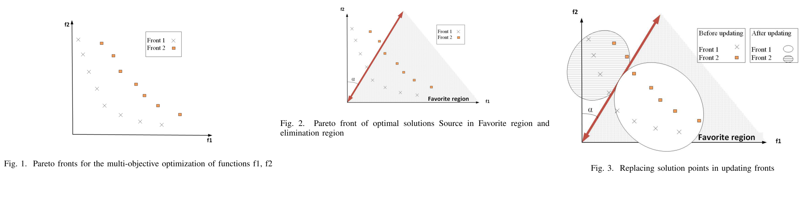

（文献综述）Planning with preference
Jorge A. Baier et al., AI 2008
-
Progress: 20%, link
-
Terms:
-
Preference-based planning (PBP)
-
主要调研了两个问题：
- 如何在PBP的框架下定义preference。（planning preference languages） 需要一种语言来定义preference，建立起用户的preference和规划的preference的联系 1. 如何定义preferences 2. Aggregate不同的preference
- 定义了preference后，如何有效的优化出preferred plan。（algorithms for planning with preferences）
-
传统规划与PBP（如何以preference作为依据比较plan？）
，状态，初始状态，目标( )和算子（operators） - 传统方法： STRIPS，ADL，PDDL（主流方法）。
- PBP：
用以表示依据preference对plan的比较（ ， is at least preferred as plan ），更严格的用 - 部分（partial）/全部（total）preference
-
Preference languages and formalisms（如何定义）
- 需要考虑的点：
- 普适性（compact, not explicitly）
- (Over states) referring to properties of a plan.
- (Over actions) Additionally provide for preferences over actions occurrences, 以附加在action上为主，也会部分的附加在state上。
- Quantitative or qualitative or both
- Quantitative languages: solutions are associated with numeric values
- Decision-Theoretic Planning (DTP)
- Partial Satisfaction Planning (PSP)
- PDDL3 Linear temporal logic involves here.
- Qualitative languages: 不需要依据任何数据进行定义
- Languages Based on Ranked Knowledge Bases（Languages based RKB）
- Conditional Preference Networks (CP nets, Boutilier et al.) 扩展形式，引入了trade-offs：TCP-nets
- Temporal and Temporally Extended Preferences
- Both：
- 其它方法LLP，DT-Golog
- Quantitative languages: solutions are associated with numeric values
- 最近的解决方案PDDL3，planning with hierarchical task networks (HTN)
- 需要考虑的点：
-
PBP算法（如何求解）
- Optimal, k-optimal, Incremental
- Search-Based PBP
- PREF-SEARCH
- Final State Preferences
- Temporally Extended Preferences (TEPs)
- PPLAN
- HPLAN-P
- SGPlan5
- PBP through general-purpose solvers
-
研究方向
- 效率问题。现在的PBP planner的效率主要依赖于relaxed planning graph techniques，在简单场景中信息不足（？）
- 现阶段主要研究集中在detereminstic planning上。缺少对incomplete knowledge等情景的研究
- 现阶段的解法需要preference elicitation已解决，但这点在实际问题中较难达成。以decision-making的形式获取user preference比较困难。一种解决的方向是用交互的方式develop a most-preferred plan。
A prior preference-based decision-making algorithm in Pareto Optimization
Masoumeh Jafari et al., ICCKE 2019
-
Progress: 20%, link
-
主要工作
- 对于multi-objective optimization（MOO）问题：
将objectives用Favorite Region（FR）表达，引入Angle-based updating Pareto front (PF) 算法中
- FR（Favorite Region）基于objective space创建（将FR和angle-based引入PF问题）
- PF的解在演进的过程中趋近于FR（要优化的会变得更好，不重要的也不会丢掉）
- 不在FR中的解也不会消失（go away）。解的fronts level（？）会随着变化？
- 如何平衡了适当的解的exploration和exploitation（均匀分布）？undesirable region中的解的密度也未受影响
- 实验
问题： PF是什么？FR是什么？angle-based是什么？first and second frtons是什么？
- Pareto optimal solutions：不是单一最优全局解，而是一组trade-off解（Pareto optimal set）
- Pareto optimal set’s image of the objective space is Pareto optimal front
- E.g.:
- f1, f2: objectives space
- non-dominance solutions sorted in first, second Pareto front 
- Decision making（DM） 两类MOO算法：No-preference和Preference-based 三种方法利用preference：（前两个是什么？最后一个好理解） 1. Priori method 2. Posteriori method（本文重点） 3. Interactively method
- 对于multi-objective optimization（MOO）问题：
将objectives用Favorite Region（FR）表达，引入Angle-based updating Pareto front (PF) 算法中
-
Method:
- 旋转向量将Front 1 和Front 2进行划分
- 划分区域即为favorite region和elimination region
- 根据向量划分结果将favorite region内的解放入Front 1中，将elimination region中的解放入Front 2中
- 重复上述过程直至收敛或停止条件
-
ref